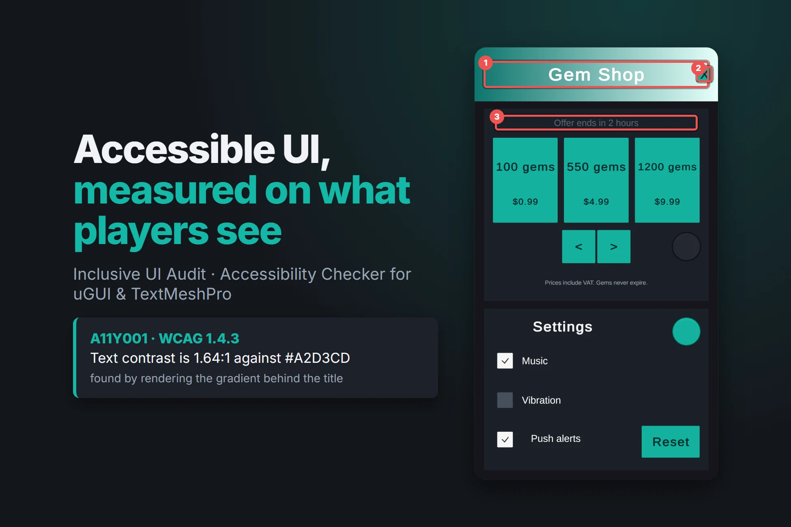
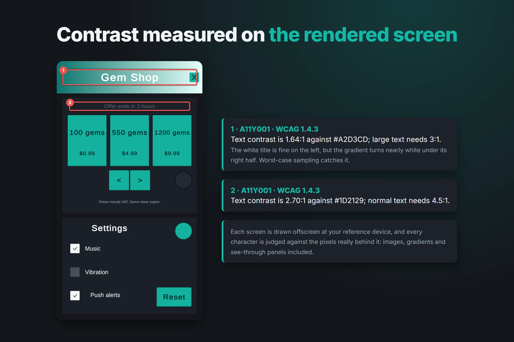
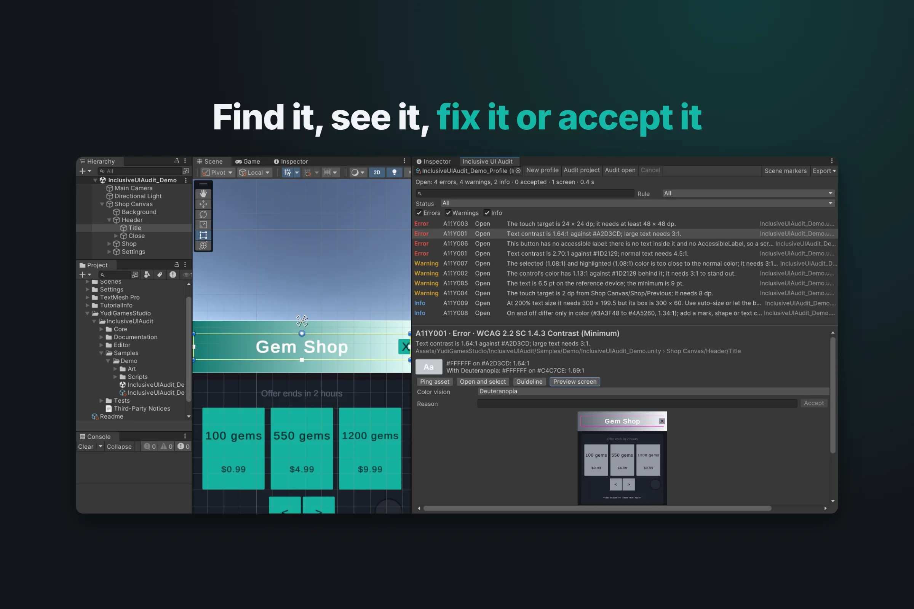
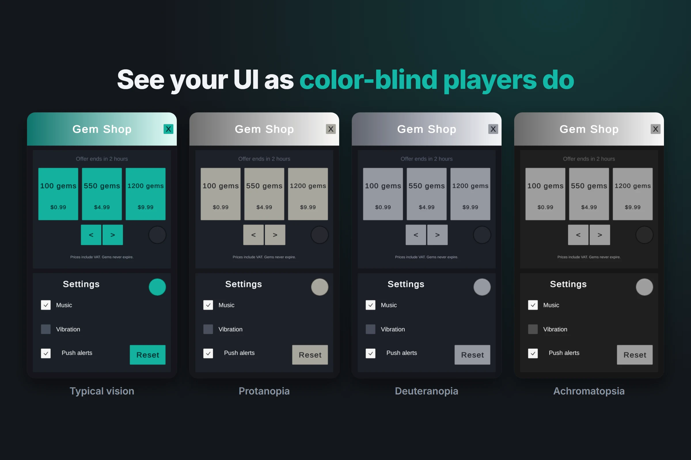
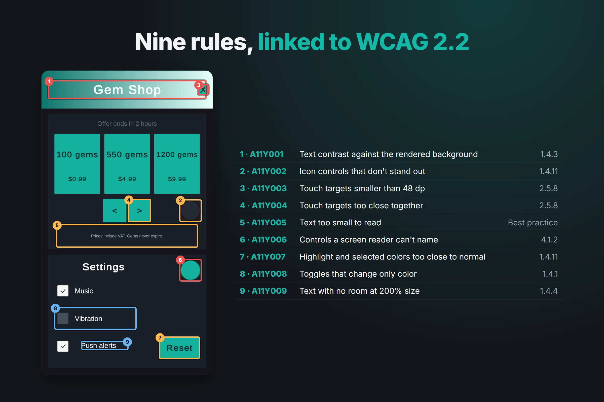
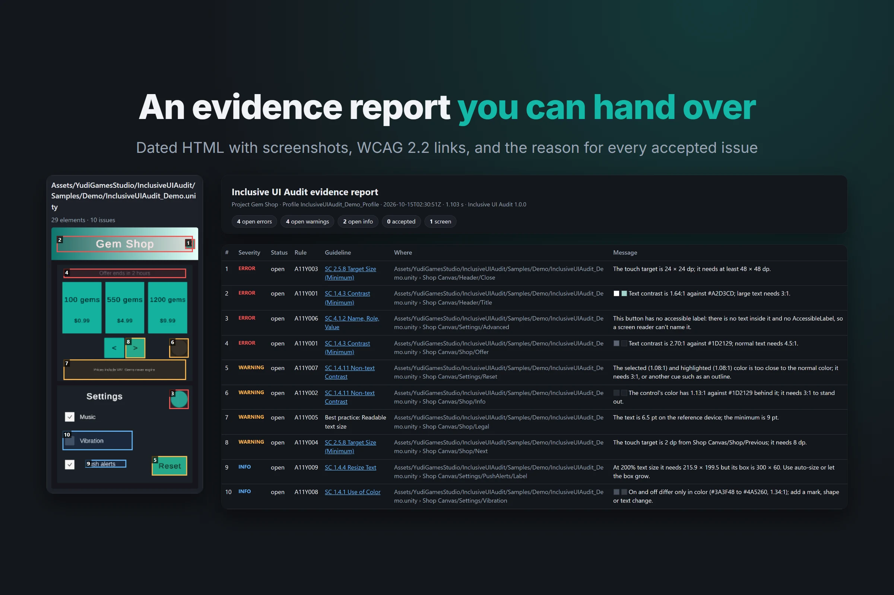
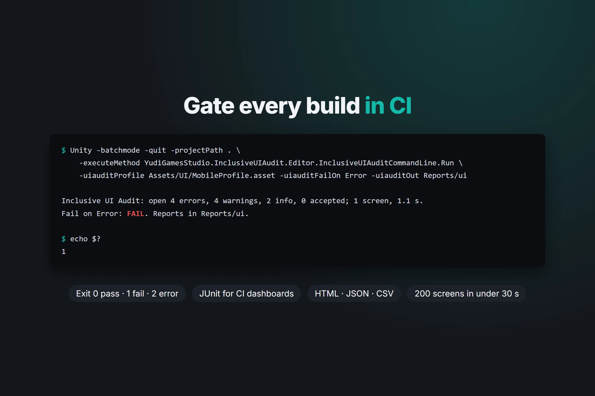

Inclusive UI Audit
The accessibility audit built for uGUI and TextMeshPro: contrast, touch targets, labels and text size, measured on what players see.

The problem
A title that is readable on the dark half of a gradient fades into the light half. A close button is comfortable with a mouse and too small for a thumb. An icon-only button means nothing to a screen reader. These problems hide in the UI until a player, a store reviewer or an accessibility audit finds them.
Inclusive UI Audit lays out each prefab and scene as a reference phone would show it, renders it, and measures what is really on screen. Every issue links to the WCAG 2.2 guideline it refers to, and a dated report keeps what you fixed and what you accepted, with your reasons.
Why Inclusive UI Audit?
- Measured on the rendered screen. Contrast is sampled from the pixels behind each character, so gradients, images and see-through panels count, not just the color of the panel behind.
- Built for uGUI and TextMeshPro. It audits the prefabs and scenes of the whole project, laid out at a reference phone, with sizes in dp for every CanvasScaler mode.
- Evidence you can hand over. A dated HTML report with screenshots, WCAG 2.2 links and the reason for every issue you accepted.
- Built for release checks. The command line returns an exit code and writes JUnit, so a new problem fails the build instead of reaching players.
Features
- Text contrast measured against the background as it renders: gradients, images and see-through panels included
- Touch-target size and spacing in real dp, for every CanvasScaler mode
- Finds icon-only buttons and other controls a screen reader can't name
- Text size, state colors, color-only toggles and text that won't fit at 200% size
- Color-vision preview: protanopia, deuteranopia, tritanopia and achromatopsia
- Click an issue to see the screen with it outlined, or jump to the object; Scene view markers
- Accept an issue with a reason, saved in one project file that reviews well in git
- Dated HTML evidence report with screenshots, WCAG 2.2 links and accepted-issue reasons
- Runs in CI from the command line, with exit codes and HTML, JSON, CSV and JUnit reports
- Takes your own rules through a small C# interface
Audits 200 screens in under 30 seconds (laptop i7-11370H, RTX 3050 Ti).
Screenshots












Works with
- Unity 2022.3 LTS and Unity 6
- Built-in Render Pipeline, URP and HDRP
- uGUI and TextMesh Pro, on Screen Space and World Space canvases
- Any build target: Inclusive UI Audit runs in the Editor and adds nothing to your builds
Data handling
- Runs entirely in the Editor, with no network calls and no analytics
- Reads your prefabs and scenes in throw-away copies, and never changes them
- Writes only its settings, the issues you accept and the reports you export
Known limitations
- UI Toolkit screens aren't audited yet.
- Game-world backgrounds behind see-through UI are left out of contrast samples, since they change while playing.
- Animated UI is measured in the state it is saved in.
- Accessible labels are checked for being present, not for meaning.
- The checks help you find problems; they don't certify compliance with any law or standard.
Manual
The full manual ships with the package and is here to read before you buy: Inclusive UI Audit Manual (PDF).
To see what an audit produces, open the evidence report from the demo screen.
Support
Email yudigamesstudio@gmail.com with your Unity version, render pipeline and Inclusive UI Audit version. Replies within 48 hours.